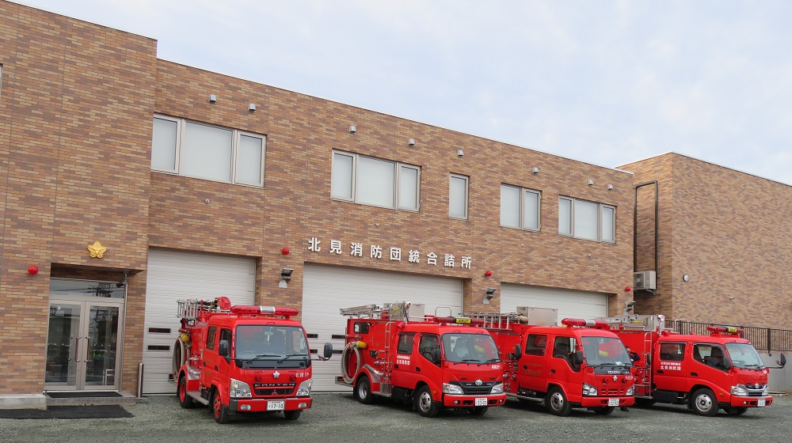

お知らせ

団員の皆様へ（令和6年２月１日更新）
- 「新ポンプ車操法」の動画をアップしました。「開始から操作始め」「納めから別れ」に分けて動画を作成しています。掲示板下方【ポンプ車操法】からご覧ください。 令和6年２月19日掲載
- 「小隊訓練」の動画をアップしました。掲示板下方【小隊訓練】からご覧ください。 令和6年２月１日掲載
- 「訓練礼式」の動画をアップしました。掲示板下方【訓練礼式】からご覧ください。 令和6年1月30日掲載
- 「弔慰関係フォルダ」内に弔慰連絡票と参集範囲覚書、元団員葬儀参列覚書を格納しました。掲示板下方【資料等リンク】からダウンロードしてください。 令和6年1月17日掲載
- 「入団届一式フォルダ」と「互助会給付金申請用紙」をアップしました。掲示板下方【資料等リンク】からダウンロードしてください。 令和6年1月17日掲載
- 新年観閲式の分列行進準備の分団長・旗手の入替要領をアップしました。掲示板下方【新年観閲式】からご覧ください。 令和5年11月24日掲載
- 消防車両の非常用ドレンの取扱いについて 【注意喚起】消防車両の非常用ドレンの取扱いについて
令和5年9月14日掲載
- 小隊訓練要領と小隊訓練図をアップしました。掲示板下方の【小隊訓練】からご覧ください。 令和5年5月24日掲載
- ポンプ車操法の動画をYouTube限定公開（動画のリンクを知っている方のみ視聴可能）でアップしました。掲示板下方【ポンプ車操法】からご覧ください。 令和5年5月2日掲載